Japan / Hokkaido / Rishirifuji
Rishirifuji
Rishirifuji · Hokkaido
Rishirifuji
Highlighted on the Hokkaido map.
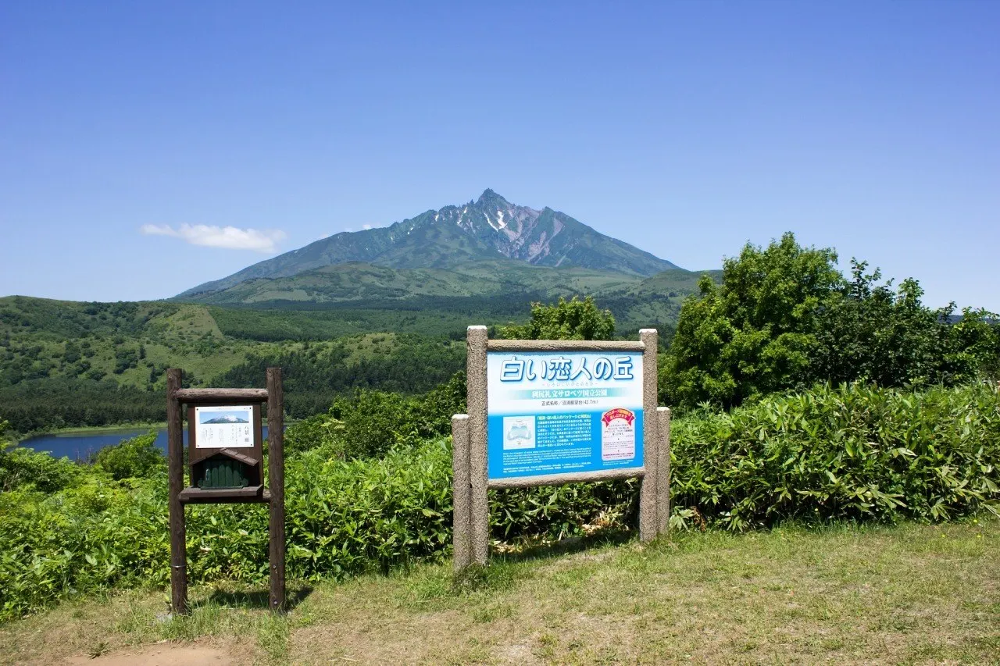
Stay
北国グランドホテル
Kitaguni Gurandohoteru
利尻山荘 花りしり
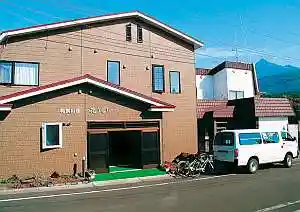
Rishiri Sansou Hana Rishiri
しまのやど かむいりしり－KAMUIRISHIRI－
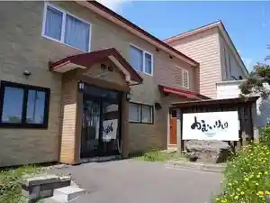
Shimanoyado Kamuirishiri - Kamuirishiri
利尻マリンホテル
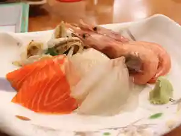
Rishiri Marinhoteru
旅館 雪国
Ryokan Yukiguni
夕陽館
Yuuhi Kan
旅館 富士
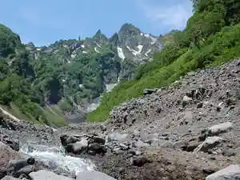
Ryokan Fuji
Dining
BRUAL 利尻島店

Brual Rishiri Shima Mise
和洋創咲 いろは
Wayou Sou Saki Iroha
Kitchencar_Rishiri
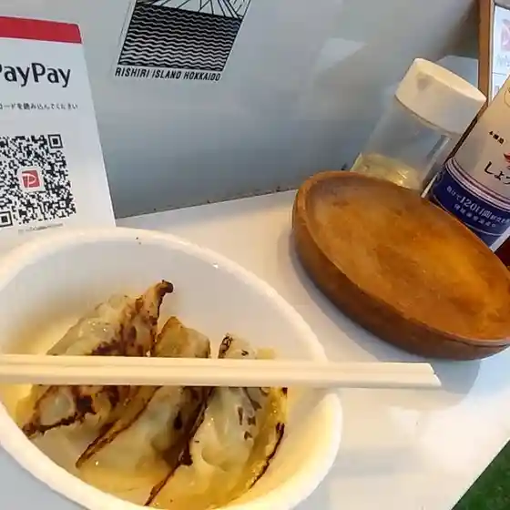
Kitchencar_Rishiri
田中家ひなげし館
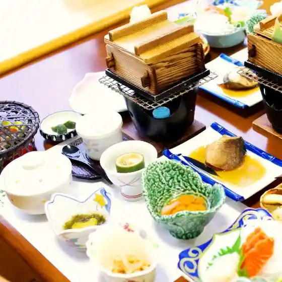
Tanaka Ie Hinageshi Kan
セイコーマート 利尻店
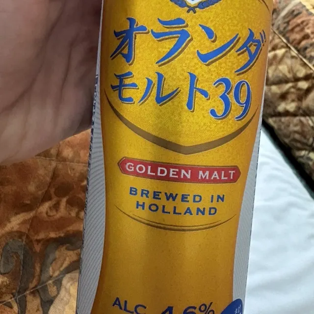
Seikoomaato Rishiri Mise
ペンション群林風
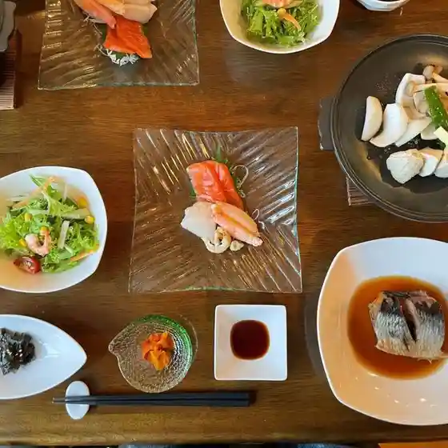
Penshon Gun Hayashi Kaze
海と山と蕎麦 そば福
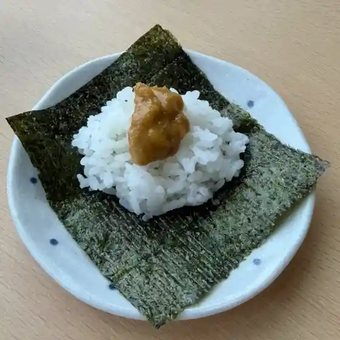
Umi To Yama To Soba Soba Fuku
利尻特産品直売 くみあいストアー
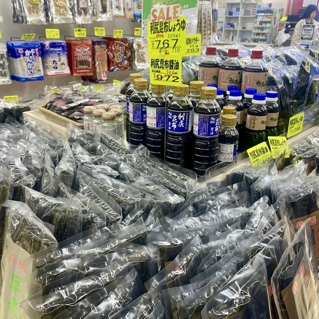
Rishiri Tokusanhin Chokubai Kumiai Sutoaa
呑喰処うえ田
Don Shoku Tokoro Ue Ta
グランスポット
Guransupotto
レラモシリ
Reramoshiri
ホテルあや瀬
Hoteru Aya Se
花りしり
Hana Rishiri
味彩川一
Aji Ayakawa Ichi
かんださんの店
Kandasanno Mise
利尻亀一
Rishiri Kameichi
鴛泊港フェリーターミナル売店
Oshidomari Minato Feriitaaminaru Baiten
まっちゃんの店
Matchanno Mise
食堂 丸善
Shokudou Maruzen
御食事処 さくらば
Mike Koto Tokoro Sakuraba
こぶし
Kobushi
長岡商店
Nagaoka Shouten
バルデセロ
Barudesero
旅館富士
Ryokan Fuji
Sights
Shiroi Koibito no Oka (Numa Ura Lookout)
Shiroi Koibito no Oka (Numa Ura Lookout)